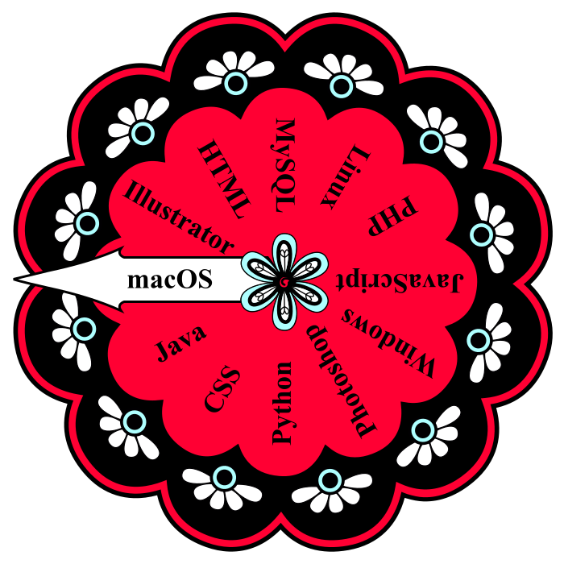

- Exceptional critical thinking skills in data science and
analytics,
with expertise in Python, Excel, and SQL. Practical experience
with
MySQL and PL/SQL.
- Defined and led projects focused on designing and implementing multimedia initiatives,
including UX, UI, web design, and front-end development for
corporate websites.
- Proven ability to collaborate effectively with creative teams in fast-paced, deadline-driven
environments, showcasing a strong work ethic and exceptional problem-solving skills.
EDUCATION
Bachelor of Science in
Information Science and
Data Analytics
(May 2026)
Master in Digital Graphic
and Advertising Design
Bachelor in
Graphic Design
Associate Degree
in Liberal Arts
Google UX Design
Professional Certificate
Programming in Python
Certificate of Achievement
Database Development
Practitioner Certificate of
Achievement-Advanced
Web Programming
Certificate of Achievement
Web Programming
Skills Certificate
Web Production
Skills Certificate
Website Design
Skills Certificate
Certificate
in Multimedia (3D)
Relevant Experience

- Managed spreadsheets and gathered data, including organizing, analyzing,
and interpreting complex datasets. Formulated algorithms to improve
data interpretation and support decision-making.
- Led the creative process on web products, ensuring a successful
presence on the Internet.
- Designed, programmed and implemented interactive media, broadening
user information on targeted products.
- Conceptualized logo designs and corporate identity.
- Created illustration graphics and animations for print and screen
design.
- Scripted and developed interactive games for specialized websites.
- Edited audio and video for promotional purposes.